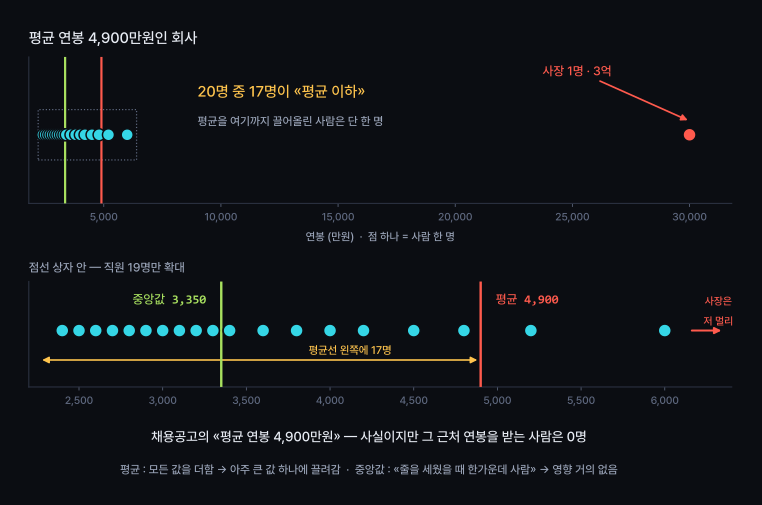
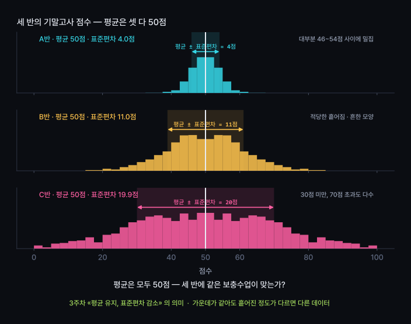
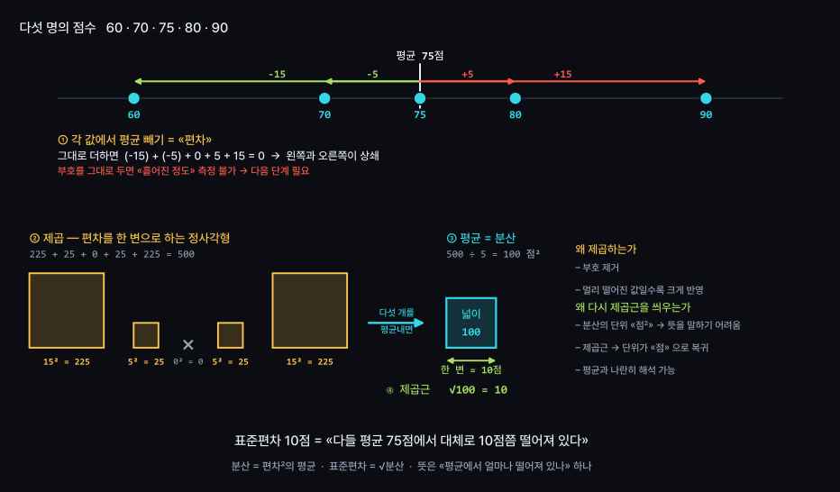
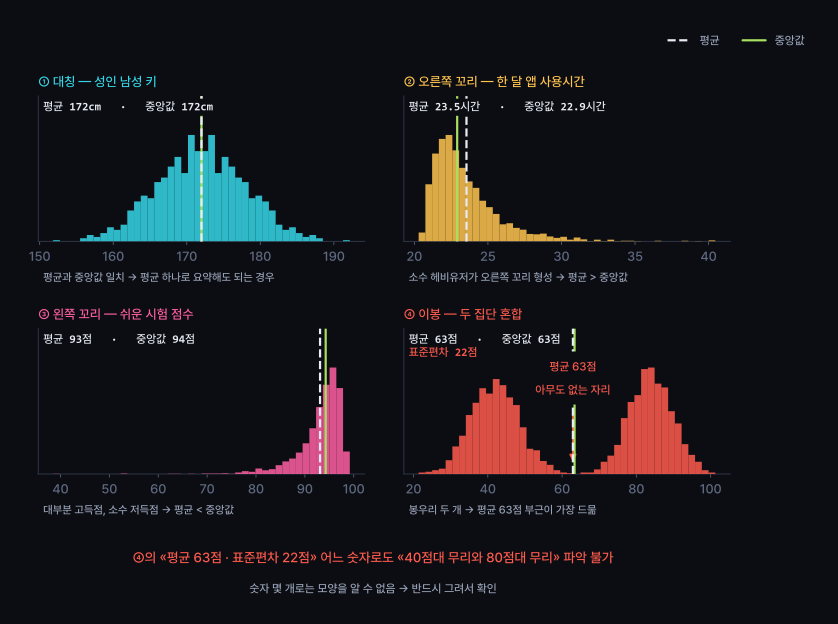
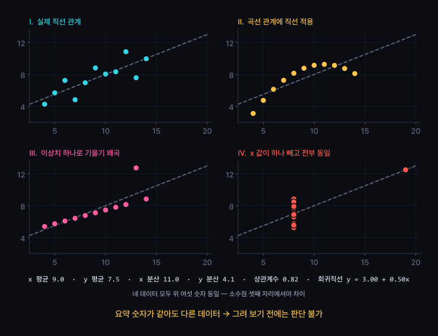
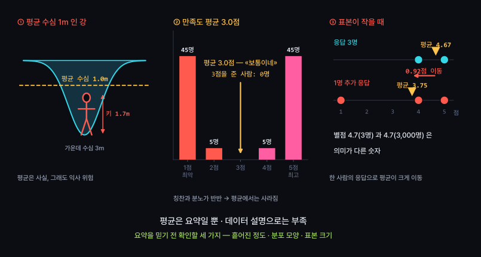

평균·중앙값·분산·표준편차, 분포의 이해
평균·중앙값·분산·표준편차가 각각 무엇을 재는지 구분
상황에 맞는 대푯값 선택과 근거 제시
«요약해줘» 요청 시 AI가 평균만 보고하는 문제
기술통계(descriptive statistics) = 요약
요약하면 반드시 빠지는 정보 발생
무엇이 빠지는지 확인하는 것이 오늘의 핵심

모든 값을 빠짐없이 반영
전체 합을 개수로 나눈 값 → 총량과 직결
계산이 쉬움
이후 배울 통계 대부분이 평균에서 출발
모든 값을 반영 → 극단값 하나에 크게 이동
평균의 위치 = 가운데보다 무게중심
평균 위치에 실제 사람이 있는지는 알 수 없음
평균 = 시소의 받침점
끝에 앉은 한 사람이 무거우면 받침점이 그쪽으로 이동
나머지 사람이 몇 명이든 마찬가지
| 대푯값 | 정의 | 극단값의 영향 | 적합한 상황 |
|---|---|---|---|
| 평균 mean |
전체 합 ÷ 개수 | 크게 받음 | 좌우 대칭, 극단값 없음 |
| 중앙값 median |
크기순 정렬 시 한가운데 값 | 거의 없음 | 연봉·집값·대기시간처럼 한쪽으로 늘어진 분포 |
| 최빈값 mode |
가장 자주 나온 값 | 거의 없음 | 색깔·학과처럼 숫자가 아닌 항목 |
중앙값 : 순서만 반영
맨 오른쪽 연봉이 3억이든 300억이든 한가운데 사람은 그대로

3주차에서 확인한 사실
«평균으로 빈칸을 채우면 평균은 그대로인데 표준편차만 줄어든다»
숫자 하나가 조금 작아진 정도
평균이 그대로라 문제없어 보임
빈칸을 모두 평균값으로 채움
= 편차가 정확히 0인 가짜 값을 대량으로 추가
→ C반이 A반처럼 보임
결과 : 데이터가 실제보다 고르게 보임
11주차 : 없는 차이를 «유의하다»고 잘못 판정하는 원인

표준편차 : 원래 단위(점, 원, 분) 그대로
→ 평균과 나란히 놓고 해석 가능
분산 : 단위가 점² → 계산 중간 단계로만 사용
평균만 적은 보고서 = 미완성
평균 옆에 흩어진 정도 필수
평균 75점 (표준편차 10점, n=32)

40점대 무리와 80점대 무리의 혼합
평균 63점
63점 근처 인원이 가장 적음 → 평균이 아무도 없는 자리를 가리킴
봉우리 두 개 → 대개
서로 다른 두 집단이 섞인 경우
평균으로 요약하기 전에 집단 분리 필요
· 수강생 점수 — 재수강생과 신규 수강생
· 앱 체류시간 — 무료 사용자와 유료 사용자
· 통학시간 — 자취생과 통학생
· 매출 — 평일과 주말
섞인 두 집단을 나눌 기준 변수 탐색 → 7주차 상관·교차분석으로 연결

평균과 중앙값 중 무엇을 쓸지
계산보다 전달할 내용에 따라 결정
| 상황 | 보고할 값 | 이유 |
|---|---|---|
| 신입 연봉 수준 파악 | 중앙값 | 임원 몇 명이 평균을 끌어올림 |
| 인건비 예산 편성 | 평균 | 총액 필요 · 평균×인원 = 총액 |
| 일반적인 배달 소요 시간 | 중앙값 | 2시간짜리 사고 한 건에도 평균 왜곡 |
| 두 반의 성적 비교 | 평균 + 표준편차 | 평균이 같아도 흩어진 정도가 다를 수 있음 |
| 설문 만족도 요약 | 분포 전체 | 평균 3.0점 ≠ «보통» |
기본 규칙 : 평균과 중앙값을 함께 계산
두 값의 차이가 크면 그 차이도 보고

표준편차 없는 평균 = 절반의 정보
봉우리 개수 · 한쪽으로 늘어진 정도
4.7점(3명)과 4.7점(3,000명)은 다른 숫자
보고서를 읽을 때와 쓸 때 모두 적용
셋 중 하나라도 빠진 평균 → 해석 보류
같은 요약 수치 ≠ 같은 데이터
시각화 전에는 판단 불가
앤스컴의 네 데이터 : 평균·분산·상관계수·회귀직선 모두 동일
실제로는 전혀 다른 데이터 → 그림 한 장이면 바로 구분
실습 검증 조건에 «그려서 보여줄 것»이 항상 포함되는 이유
AI 요약이 평균 하나로 끝나지 않게 명세 작성
[목표]
내 데이터의 숫자 열 하나를 «기술통계로 요약» 하고,
평균 하나로 요약해도 되는 열인지 판정한다.
[제약]
- 결측치를 평균으로 채우지 말 것. 뺀 행 수를 밝힐 것
- 이상치를 임의로 지우지 말 것
- 그래프 색은 지정하지 말고 기본값으로 둘 것
[검증 조건]
- 평균과 중앙값을 «함께» 보고할 것. 둘의 차이도 같이 적을 것
- 표준편차와 함께 n(사용한 행 수) 을 반드시 적을 것
- 분포를 «반드시 그릴 것» — 히스토그램, 구간 20개 이상
- 최솟값·최댓값과 그 값을 가진 행을 같이 보여줄 것
- 마지막 줄에 한 문장으로 답할 것:
«이 열은 평균으로 요약해도 되는가 / 안 되는가 · 그 이유»
[비목표]
- 상관, 예측, 통계적 검정
- 예쁜 그래프 꾸미기
핵심 : [검증 조건] 셋째 줄
그래프를 요청하지 않으면 AI가 그리지 않음 → 분포 문제 발견 불가
| # | 실습 | 확인할 개념 |
|---|---|---|
| 1 | "이 데이터 요약해줘" 한 줄만 입력 → 결과 저장 | AI 함정 #3 |
| 2 | 위 명세로 다시 요청 → 1번 결과와 비교해 늘어난 내용 기록 | 질문에 따른 답변 변화 |
| 3 | 평균과 중앙값 차이가 가장 큰 열 찾기 → 차이의 원인을 그림으로 설명 | 치우침 |
| 4 | 두 집단으로 나눌 기준 열 선택 → 집단별 평균·표준편차 계산 | 이봉 분포 |
| 5 | 3주차 «평균 대치»로 만든 열이 있으면 원본과 표준편차 비교 (확장) | 3주차 내용 연결 |
1번과 2번 결과 나란히 비교 · 제출물 없음, 수업 안에서 완료
| 개념 | 핵심 |
|---|---|
| 평균 | 가운데보다 무게중심 → 극단값 하나에도 크게 이동 |
| 중앙값 | 순서만 반영 → 극단값에 강함 연봉·집값·대기시간에 적합 |
| 분산 | 편차 제곱의 평균 · 단위가 점² → 직접 해석 곤란 |
| 표준편차 | √분산 → «평균에서 대체로 떨어진 거리», 원래 단위 |
| 3주차 연결 | 평균 대치 = 편차 0인 가짜 값 추가 → 데이터가 실제보다 고르게 보임 |
| 분포의 모양 | 대칭일 때만 평균≈중앙값 · 치우치면 꼬리 쪽으로 평균 이동 |
| 이봉 | 봉우리 두 개 → 두 집단이 섞였을 가능성 · 요약 전에 분리 |
| 앤스컴 | 요약 수치 여섯 개가 같아도 전혀 다른 데이터 → 그려 보기 전 판단 불가 |
| 보고 규칙 | 평균 옆에 표준편차와 n · 평균과 중앙값 차이도 함께 보고 |
| AI 함정 #3 | «요약해줘» → 평균만 보고 · 명세에 중앙값과 분포 그래프 포함 |
국어 80점과 수학 80점, 더 잘한 과목은?
오늘 배운 평균과 표준편차로
기준이 다른 점수를 같은 잣대로 비교